Hi, I'm JoshCode
A person who chases improvement over perfection.
"What are you afraid of losing, when nothing in the world belongs to you?"
~ Marcus Aurelius
A person who chases improvement over perfection.
"What are you afraid of losing, when nothing in the world belongs to you?"
~ Marcus Aurelius
.jpg)
Hello! My name is Rodel Joshua A. Montenegro, and I am a first-year BSCS student at Bicol University. Through this webpage, I want to share different aspects of my life, including my hobbies, interests, goals, and personal experiences.
Hello! I am Rodel Joshua A. Montenegro, a first-year BSCS student at Bicol University. You can call me Rodel, Rods, Rod, or Del. I usually use the first part of my name when talking to classmates, friends, or people I've just met. I reserve the name Joshua for my relatives and neighbors, as it helps me recognize who's calling me.
I consider myself someone who is still learning, exploring, and discovering what I am capable of. My journey has been shaped by curiosity, failures, friendships, and the experiences I've gained along the way. From developing an interest in programming to sharing memorable moments with the people around me, each experience has taught me something valuable.
Outside academics, I enjoy watching anime, reading manhwa and manhua, and playing online games. I have my flaws, and I don't aim to be perfect. Instead, I believe in embracing my imperfections, learning from mistakes, and choosing improvement over perfection. After all, I'm still a work in progress, and every experience is another part of my story.
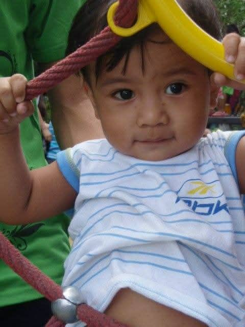
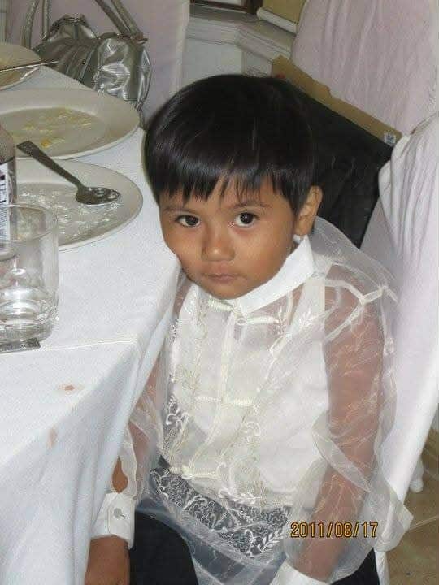
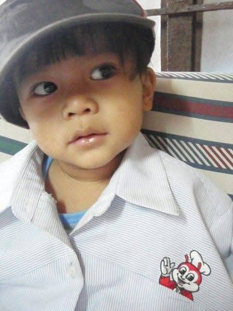
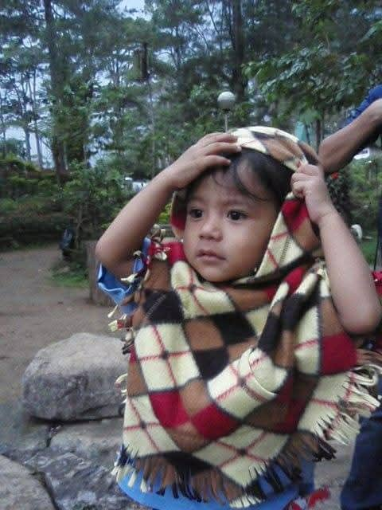


A glimpse of the things I enjoy and the activities that make me who I am.
Watching anime especially about reincarnated and regress genre.
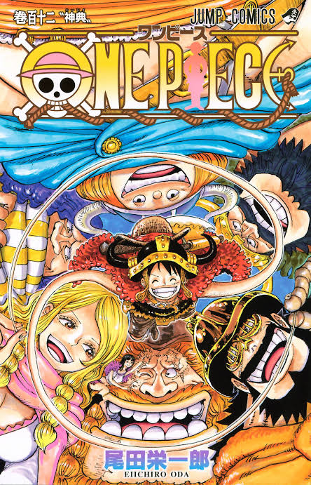
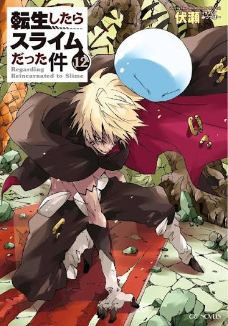
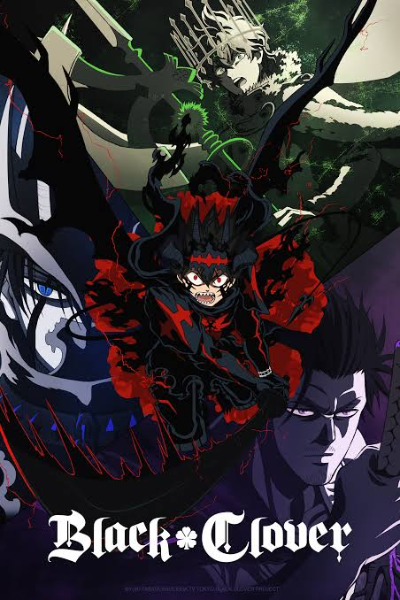

Reading manhwa / manhua especially about reincarnated, regress and overpowered genre.
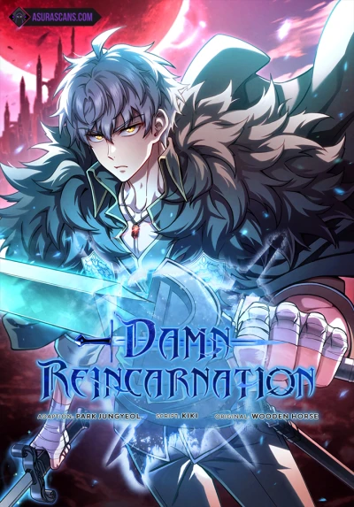
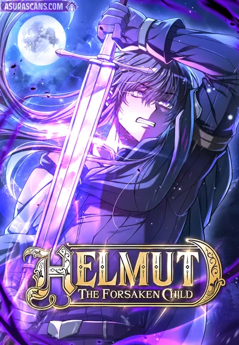
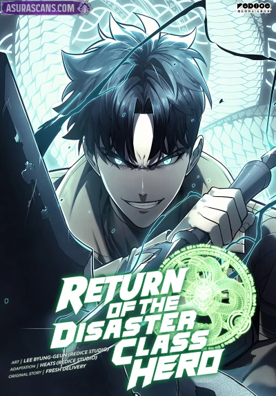
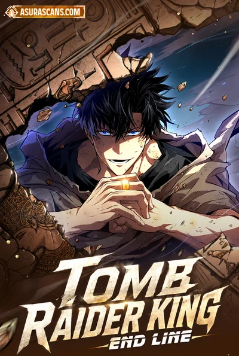
Ever since I started enjoying online and offline games, I began wondering how developers make games, websites, and applications. Then, when I was in Grade 8, I met my brother's friend, who was graduating with a degree in Computer Science. She sometimes worked as a freelancer, and my brother and I would help her with some of her tasks. That was the beginning of the spark and the first step in my coding journey..
After crossing paths with that particular person, I tried to start coding. It was fun, especially when I saw my code come to life. However, my biggest challenge was laziness. I always struggled to maintain consistency in my learning journey. Sometimes, I would study coding for about two days, only to return to it several months later.
I can say that my spark was reignited when I became responsible for creating something for our research project. Seeing how my groupmates' ideas came together and turned into something meaningful gave me a sense of purpose and fulfillment. More than that, it helped me rediscover something within myself that I had almost forgotten: my passion for creating, exploring, and turning ideas into reality.
I was also fortunate to have a great teacher who guided and mentored me throughout the process. His constant encouragement taught me to seize opportunities, embrace challenges, and believe in my potential. What started as a spark of curiosity gradually grew into something I became deeply passionate about, almost an obsession. Now, I find myself constantly wanting to learn, create, and discover what else I am capable of. I don't have to be perfect; I just have to keep growing..
The journey has been filled with both fun and disappointments. There were times when my declining results made me question myself, even wonder, "Did I choose the wrong program?" I sometimes feel like I don't belong, but whenever I feel down, I remind myself that I prayed for this course. Now that God has given me this opportunity, why should I give up?
I know the journey is still long, but I have come so far from who I was yesterday. I think about the little boy who dreamed of becoming a Computer Science student, whose curiosity brought him here, and who never wanted to give up despite his doubts and comparisons. So, no matter what happens, I will face it with joy. I'm doing this for myself and for that little kid who always believed in me.
To develop both front-end and back-end skills and build complete applications.
Career GoalTo create responsive, functional, and visually appealing websites.
Career GoalTo create interactive games and bring creative ideas to life.
Career GoalThese are the skills I am learning
Project I've worked on and experiences I've gained.
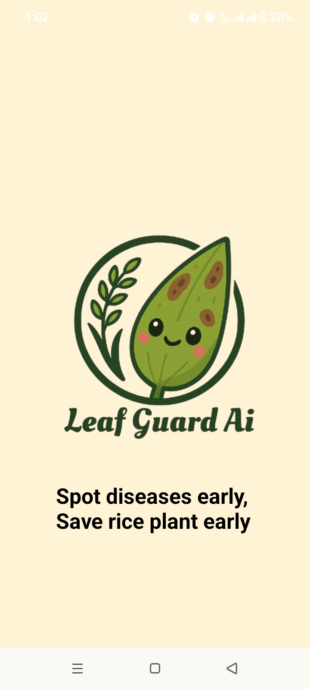
Mobile Application Using Vision Transformer (ViT) for Rice Leaf Disease Detection
The journey of our research was indeed fun. The whole four months, from starting from scratch to bringing our ideas to life, was an experience worth remembering. We had very limited time to work because of school events and conflicting class schedules, making it difficult to find time to collaborate. On top of that, we had very little background knowledge about our research category, which made the process even more challenging. We had to learn, explore, and figure things out as we went. Despite the pressure and limited time, we managed to push through, learn from one another, and turn our ideas into something meaningful. It wasn't a perfect journey, but it was one filled with growth, teamwork, and memories I will always value.
Plan your week and stay on track.
| MONDAY | TUESDAY | WEDNESDAY | THURSDAY | FRIDAY | SATURDAY | SUNDAY |
|---|---|---|---|---|---|---|
CS 102Intro to Programming 1 4:00 PM - 7:00 PM |
PHYS 1Physics for Computing 1:00 PM - 2:30 PMMATH 101Math Analysis 2:30 PM - 4:00 PM |
CS 101Intro to Computing 9:00 AM - 12:00 PMCS 102Intro to Programming 1 4:00 PM - 7:00 PM |
PHYS 1Physics for Computing 1:00 PM - 2:30 PMMATH 101Math Analysis 2:30 PM - 4:00 PM |
GEC 11Understanding the Self 9:00 AM - 12:00 PMMATH 101Math Analysis 2:30 PM - 4:00 PM |
NSTP 11CWTS 7:00 AM - 10:00 AMPATH-FIT 1Movement Competency Training 4:00 PM - 6:00 PM |
I enjoy visiting this website because it offers a wide collection of manhwa and manhua. I also like its beginner-friendly interface and frequent chapter updates.
Visit Asura Scans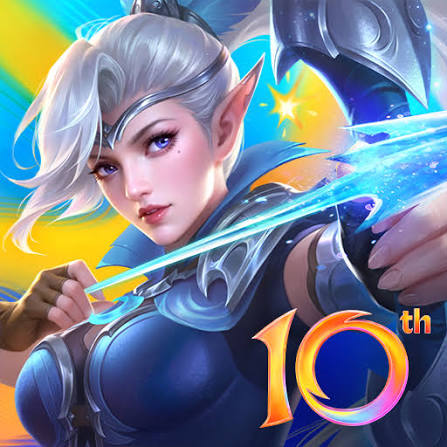
A game I've been playing since Grade 5. Over the years, it has become more than just a pastime; it's where I've experienced intense matches, learned teamwork, and, most importantly, strengthened the bonds I share with my friends, brother, and cousin. Every victory and defeat has given us countless moments of fun, laughter, and memories that I'll always treasure.
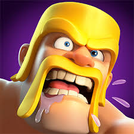
I've been playing Clash of Clans since Grade 3, so it has been part of my childhood for a long time. I remember creating a clan with my cousins, and later on, making another one with my classmates. We would help each other, share troops, and participate in clan wars. It was always fun playing together, and those little moments made the game more memorable for me.
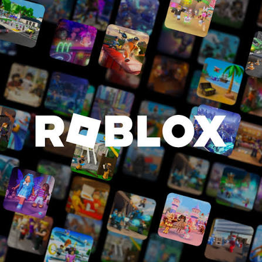
I started playing Roblox in Grade 9 because of a friend who introduced me to the game. Back then, I especially enjoyed playing Blox Fruits. It became one of the games I spent time on whenever I wanted to have fun and explore different experiences with friends.
Feel free to reach out to me through my social accounts.
Find me on my social platforms!
And that's a wrap! Through this webpage, I was able to share my journey, interests, and dreams. This project became more than just a school requirement; it was an opportunity to express myself and turn my ideas into something real.
I genuinely enjoyed the process, from designing each section to fixing layouts and figuring out problems along the way. It wasn't always easy, but every challenge taught me something new and made the experience worthwhile.
To everyone who took the time to explore my webpage, thank you for being part of this little journey. Remember, you don't have to know everything to begin; all you need is the curiosity to start and the courage to keep going.
“The journey doesn't end with what I know, but continues with what I'm willing to learn.”
“Maybe we just need someone to believe in us, guide us, and help us rediscover the spark that once inspired the younger version of ourselves to dream.”